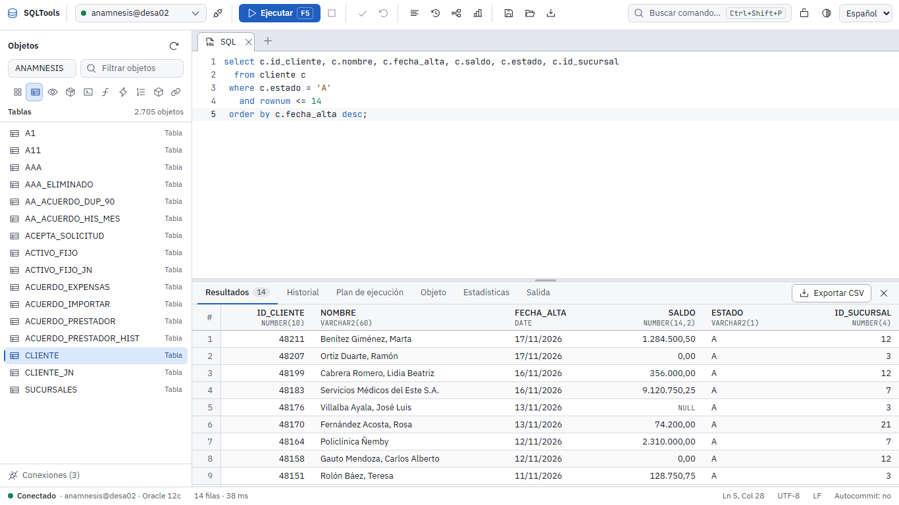
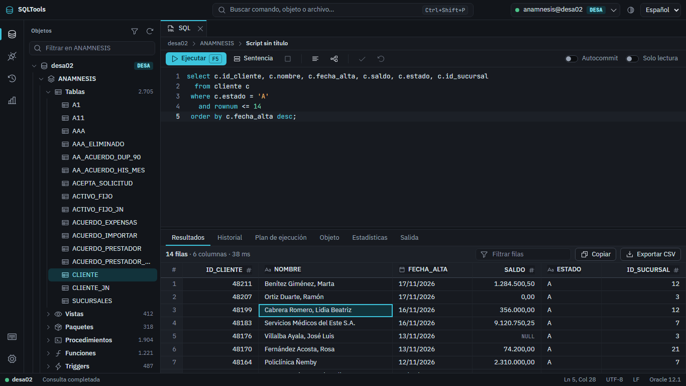
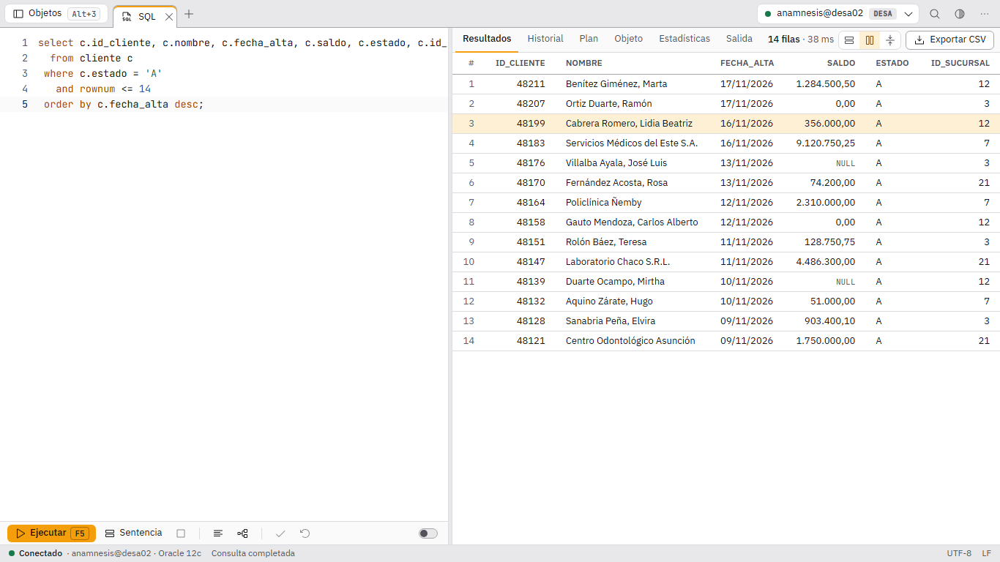

SQLTools — propuestas de UI/UX
Tres direcciones para elegir. Son maquetas estáticas con seis estados y tema claro y oscuro; no tocan la aplicación. La comparación, el costo de implementarlas y la recomendación están en el README.

A · Clásico refinado
Menor riesgo · acento azul · tema claro
- Mismo esqueleto del SQLTools original
- Barra agrupada y un solo botón con etiqueta
- Explorador con iconos y barra de estado útil

B · Banco de trabajo moderno
Estructura tipo IDE · acento cian · oscuro por defecto
- Árbol por conexión, esquema y tipo
- Paleta de comandos protagonista
- Insignia de entorno DESA / PROD

C · Editor primero
Más espacio para el código · acento ámbar
- Explorador como cajón (Alt+3)
- Error en línea, bajo la sentencia
- Resultados abajo o a la derecha